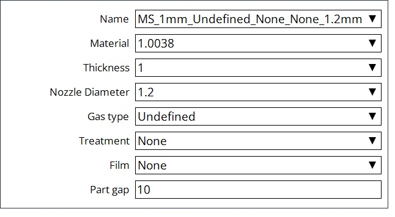
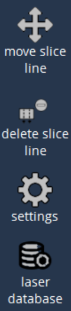

编辑布局
我们有Flux的FXLYT格式，支持Vulcan Control。使用FXLYT文件的好处是因为它具有可塑性， 操作员可以用此类文件做的工作比用僵硬的DIN文件多得多。 用户需要选择一个布局文件，然后按编辑转到编辑布局页面。它有五个选项，如下所示：
-
零件
-
轮廓
-
装备
-
骨架
-
顺序
零件


添加： 用户可以在布局中添加DXF零件。
移动： 可以使用此选项移动布局中的选定零件。
-
向左移动：零件向左移动。
-
向右移动：零件向右移动。
-
上移：零件移至顶部。
-
下移：零件移到底部。
零件移动的量取决于所选的步长。
旋转： 可以使用此选项旋转布局中的选定零件。
-
向右旋转90度：零件沿顺时针方向旋转90度。
-
向左旋转90度：零件沿逆时针方向旋转90度。
-
向右旋转：零件顺时针旋转。
-
向左旋转：零件逆时针旋转。
零件旋转的量取决于所选的步长。
步长： 基于为移动和旋转的“小”、“中”和“大”给定的值，零件将相应地移动和旋转。用户可以根据自己的偏好编辑值。

切换： 用户可以选择任何一个零件，然后单击切换选项以选择所有其他剩余零件。通过单击相应的零件可以选择多个零件。取消选择可以通过单击所选零件来完成。 然后可以一起移动、旋转或删除。

删除： 用户可以通过选择删除零件。在弹出窗口中单击“是”以删除。

重新排样： 用户可以使用重新排样选项将布局中的所有零件排样。
零件设置： 用户可以使用此选项更改板材大小、板材边距、轧制方向和零件间隙。

激光数据库： 用户可以使用此选项更改激光数据页面， 包含材料、厚度、喷嘴直径、气体类型、加工处理和薄膜。

轮廓
在此页面中，用户可以选择轮廓，然后使用这些选项进行编辑。

-
微连接： 用户需要在选择以下任何选项之前先选择轮廓：
-
确保微连接：如果所选轮廓已有一个或多个微连接，则不执行操作；否则，插入一个微连接。
-
添加微连接：此选项将多个微连接添加到所选轮廓。
-
减少微连接：此选项可减少所选轮廓的微连接。
-
突出显示微连接：此选项突出显示布局中的微连接。
-
-
废料切割： 用户需要选择内轮廓以执行以下选项：
-
创建废料切割：此选项用于创建废料切割。
-
删除废料切割：此选项删除所选的废料切割。
-
-
轮廓设置：此选项用于更改微连接宽度、废料切割网格尺寸和废料切割进刀长度。

装备
使用此选项，用户可以将进刀移动到目标点，并可以通过选择轮廓来编辑装备参数。
-
移动进刀： 此选项用于通过选择进刀点并移动到新的目标点来移动进刀。

-
激光切割： 通过选择装备，对话框打开。用户可以更改激光装备。
-
用户可以将切割方向从顺时针翻转到逆时针，反之亦然。
-
根据要求选择穿刺类型。
-
根据要求选择切割条件。
-
根据要求更改进刀参数——长度、半径和角度。
-
启用/禁用微连接并根据要求更改其宽度。
骨架
在此页面中，一旦创建板材切割从 设置 中启用，用户可以移动和删除切片线。


-
移动切片线： 用户需要启用创建板材切割选项来创建切片线，然后根据步长中给出的距离选择要向左或向右移动的切片线。
-
删除切片线： 用户需要选择切片线，然后使用删除切片线选项将其删除。
-
骨架设置：

-
创建板材切割： 是否必须对残料骨架进行切片。
-
X 和 Y 间距：这是垂直和水平切块线之间的间距。
-
创建剩余板材： 启用或禁用剩余板材以相应地创建或删除残留物切割。
-
最小余料宽度：即使上述选项 被选中，也只有在切割所创建的未使用板材的宽度 大于或等于该值时，才会添加最终切割。
-
最终切割 X 偏移：这是零件加工的最右边到创建余料的最终垂直切割的距离。
-
在所有零件之后加工切片线： 打开它将首先切割零件，然后是板材。以下参数会影响每个单独的切块切割进行编程的方式：
-
板料边缘的微接缝间隙：如果您希望在切块切割接触板料边缘的点位留下小搭边，请将此处设置为大于零的值。
-
零件边缘的微接缝间隙：如果您希望在切块切割接触零件边缘的点位留下小搭边，请将此处设置为大于零的值。
-
到零件边缘的穿刺距离： 这是穿刺点到零件边缘的距离。
-
到板材边缘的测量距离： 此参数标识板材边缘之前的距离，在此处激光头高度被锁定，间距调节器被关闭。
-
板料边缘后的超程量： 这是 机头超出板料边缘的量，此时激光打开但间距调节器关闭。